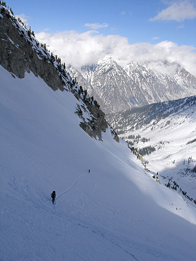
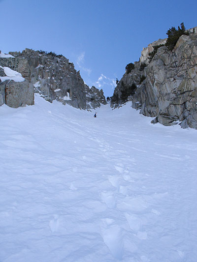
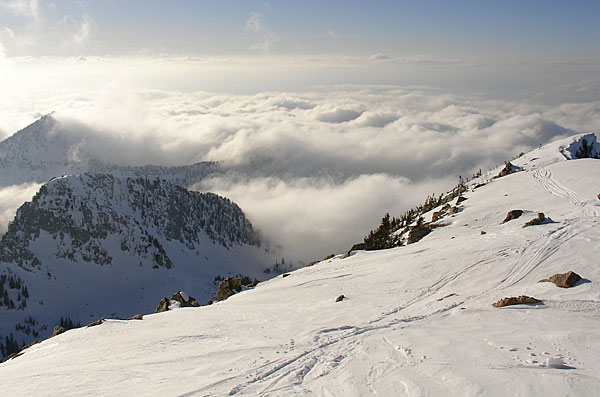
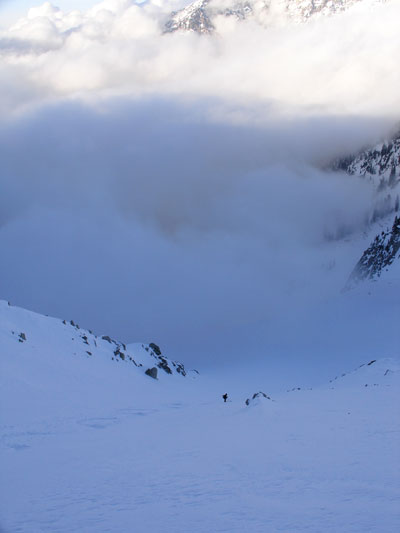

|
Oblisk/Sliver/Coalpit
Totally epic story to come, Brah! As soon as I have time to
make it up!

SomeGuy and Powder Princess on the last switch back to the neck of The Sliver

Booting up The Sliver: Helmüt lagging behind as usual....

This is traversing from the hypodermic to the Coal Pit face. It was nice to
have SLC completely masked.

Helmüt rests, 2 thirds of the way down the Coalpit headwall.
Mysterious clouds veil our perilous ski out, or something like that.
|